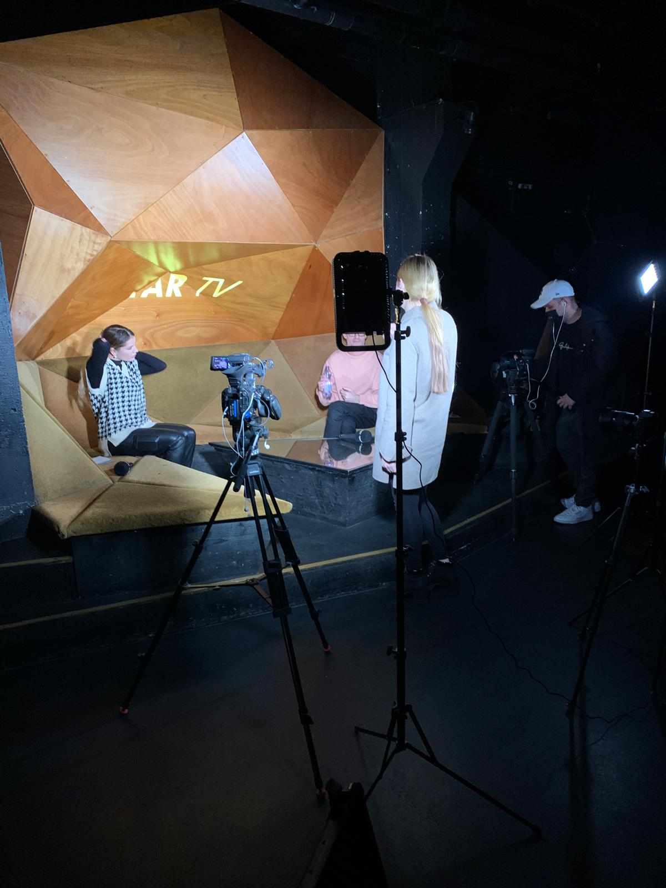

Reportage Florian Burkhardt
2021
Kamera: Anja Klose, Michael Stadler
Recherche, Regie & Postproduktion: Braelyn Mitrovic
Moderation: Joanna Lutiq
Als die Medienmitteilung zu Florian Burkhardts neuem Album in meinem Mailpostfach ankam, freute ich mich riesig. Zuvor las ich über ihn in der Zeitung, sogar im Deutschunterricht lasen wir Artikel über ihn, in denen er als Narzisst geframed wurde, was ihn berüchtigt machte. Den Fragenkatalog erstellte ich innerhalb von zehn Minuten. Meine Gedanken rasten schneller, als ich mit meinen 550 Tastaturschlägen pro Minute tippen konnte. Die Visualisierungen und den Stil hatte ich bereits innert Sekunden vor Augen. Anspruchsvoll war jedoch die Hintergrundrecherche. Falls er wirklich ein Narzisst ist, muss sein ganzer Lebenslauf verifiziert werden. Jede Marke, für die er angeblich über den Laufsteg lief, sollte gefunden werden. Jede Website, über die je über ihn geschrieben wurde, sollte ausgegraben werden. Und genau das machte ich zwei Wochen lang, von Montag bis Sonntag und von acht bis acht. Nicht weniger herausfordernd war es, kostenlos eine Kulisse zu bekommen. Die Pandemie war in vollem Gang, die Clubs waren geschlossen, alle hatten Kurzarbeit und die Club-Manager versuchten, für jenste Dienstleistungen irgendwie noch an Geld zu kommen. Ich wollte unbedingt im Spacemonkey drehen, und den Drehtermin konnte ich tatsächlich verhandeln – bis ich die Rückmeldung bekam, dass der Club dichtmachen musste, weil er komplett pleiteging. So kam das Hive als zweite Wahl. Für den Dreh plante ich drei Cams, einen Screen für Einblendungen und zwei Kamerapersonen. Den Kameramann musste ich allerdings ersetzen: Mit dem ursprünglichen Kameramann besuchte ich die Kulisse zwei Tage vor dem Dreh, um gute Cadrages aufzunehmen und mich später für eine davon zu entscheiden. Als der Kameramann sich auf einen Stuhl setzen wollte, der gar nicht existierte, verletzte er sich derart, dass er von einem Steissbeinbruch ausging und ich einen Krankenwagen rufen musste. Schlussendlich stellte sich heraus, dass auch der Steissbeinbruch nicht existierte – sein emotionaler Schaden war jedoch durchaus real. Aufgrund seines Mental-Health-Breaks nahm ich einen anderen Kameramann mit. Leider habe ich nur noch den Zwischenstand des Projekts und nicht mehr das finale File, das im TV ausgestrahlt wurde. Die gröbsten Makel sind vor allem bei den Übergängen der Überblendungen, beim Timing und beim Sounddesign erkennbar.